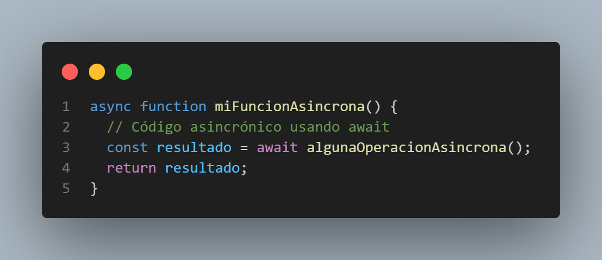

Programación Asíncrona
La programación asincrona es un paradigma de programación que permite que las funciones se ejecuten de forma concurrente, en lugar de de forma secuencial. Esto significa que varias funciones pueden ejecutarse al mismo tiempo, en lugar de esperar a que una función termine antes de que la siguiente se ejecute.
La programación asincrona puede ser útil para mejorar el rendimiento de las aplicaciones, ya que puede permitir que se ejecuten varias tareas al mismo tiempo. También puede ser útil para hacer que las aplicaciones sean más receptivas, ya que puede permitir que las aplicaciones sigan respondiendo a los eventos del usuario, incluso cuando se están ejecutando tareas largas.
Hay varias formas de implementar la programación asincrona en JavaScript. Una forma es utilizar funciones asíncronas, que son funciones que devuelven promesas. Las promesas son objetos que pueden utilizarse para representar el resultado de una función asíncrona.
Otra forma de implementar la programación asincrona en JavaScript es utilizar eventos. Los eventos son notificaciones que se envían a una aplicación cuando ocurre algo, como cuando el usuario hace clic en un botón o cuando se completa una carga de red.
La programación asincrona puede ser un concepto complejo, pero puede ser una herramienta muy poderosa para mejorar el rendimiento y la reactividad de las aplicaciones JavaScript.
Temporizadores (setTimeout & setInterval)
setTimeout y setInterval son dos métodos de la ventana global de JavaScript que se utilizan para programar la ejecución de una función.
setTimeout toma dos argumentos: la función que se va a ejecutar y el número de milisegundos que se va a esperar antes de que se ejecute la función.
setInterval toma los mismos dos argumentos que setTimeout, pero la función se ejecutará repetidamente, cada vez que se haya cumplido el intervalo de tiempo especificado.
Por ejemplo, el siguiente código hace que un mensaje se muestre en la consola de depuración del navegador después de 5 segundos:
El siguiente código hace que un mensaje se muestre en la consola de depuración del navegador cada 5 segundos:
setTimeout y setInterval son dos herramientas muy útiles para la programación asincrona en JavaScript. Pueden utilizarse para programar la ejecución de funciones en el futuro, o para ejecutar funciones repetidamente a intervalos de tiempo regulares.
JavaScript Asíncrono
La programación asíncrona en JavaScript es una forma de programar en la que las funciones no se ejecutan de forma secuencial, sino que se ejecutan en paralelo. Esto significa que varias funciones pueden ejecutarse a la vez, en lugar de esperar a que una función termine antes de que la siguiente se ejecute.
Beneficios
La programación asíncrona puede ser útil para mejorar el rendimiento de las aplicaciones, ya que puede permitir que se ejecuten varias tareas al mismo tiempo. También puede ser útil para hacer que las aplicaciones sean más receptivas, ya que puede permitir que las aplicaciones sigan respondiendo a los eventos del usuario, incluso cuando se están ejecutando tareas largas.
Implementación
Hay varias formas de implementar la programación asíncrona en JavaScript. Una forma es utilizar funciones asíncronas, que son funciones que devuelven promesas. Las promesas son objetos que pueden utilizarse para representar el resultado de una función asíncrona.
Otra forma de implementar la programación asíncrona en JavaScript es utilizar eventos. Los eventos son notificaciones que se envían a una aplicación cuando ocurre algo, como cuando el usuario hace clic en un botón o cuando se completa una carga de red.
Ejemplos
Aquí hay algunos ejemplos de programación asíncrona en JavaScript:
Utilizando funciones asíncronas:
Utilizando eventos
Asincronía y el Event Loop
La asincronía y el Event Loop son conceptos fundamentales en JavaScript que nos permiten manejar tareas que toman tiempo en ejecutarse, como operaciones de red, lectura y escritura de archivos o consultas a bases de datos, sin bloquear el hilo principal de ejecución.
Asincronía:
JavaScript permite realizar operaciones asincrónicas mediante el uso de callbacks, promesas o async/await (introducido en ES2017). Estos mecanismos permiten que una tarea se ejecute en segundo plano mientras el hilo principal continúa con otras tareas.
En este ejemplo, setTimeout() es una función asincrónica que toma un callback y un tiempo en milisegundos. La función se ejecutará después de 2000 ms (2 segundos) y no bloqueará el hilo principal. Por lo tanto, verás el mensaje "Inicio", luego "Fin" y, finalmente, "Tarea asincrónica completada." después de 2 segundos.
Event Loop:
El Event Loop es un bucle que se ejecuta continuamente en el hilo principal y está a cargo de manejar las tareas asincrónicas. Mientras haya tareas asincrónicas pendientes, el Event Loop revisará la cola de tareas y las ejecutará una por una. Cuando no haya más tareas asincrónicas en la cola, el Event Loop esperará hasta que haya nuevas tareas encoladas antes de continuar su ejecución.
Este mecanismo garantiza que el hilo principal permanezca receptivo y no se bloquee mientras se manejan tareas que toman tiempo.
En resumen, la asincronía y el Event Loop permiten que JavaScript maneje operaciones lentas sin bloquear el hilo principal, lo que mejora el rendimiento y la capacidad de respuesta de las aplicaciones. Es fundamental comprender estos conceptos al desarrollar aplicaciones modernas en JavaScript y aprovechar al máximo su potencial asincrónico.
Callbacks
Los callbacks son una de las formas más comunes de manejar la asincronía en JavaScript. Un callback es simplemente una función que se pasa como argumento a otra función y que se invoca después de que la función original ha terminado su ejecución o ha completado una tarea específica. Los callbacks son ampliamente utilizados en operaciones asincrónicas, como solicitudes a servidores, lectura de archivos o animaciones, para asegurarse de que ciertas acciones se realicen en el momento adecuado.
Estructura típica de un callback:
El callback se invoca con el resultado o los datos relevantes una vez que la operación asincrónica ha sido completada.
Ejemplo de uso de un callback:
En este ejemplo, tenemos una función obtenerDatosDeServidor que simula una solicitud a un servidor con un tiempo de espera de 2 segundos. Una vez que la solicitud ha terminado, se invoca al callback mostrarDatos con los datos obtenidos.
Los callbacks son una poderosa herramienta en JavaScript para manejar tareas asincrónicas y garantizar que las operaciones se realicen en el momento adecuado. Sin embargo, cuando se trabaja con múltiples callbacks o en situaciones muy anidadas, el código puede volverse difícil de leer y mantener. Aquí es donde entran en juego las promesas y async/await, que ofrecen una sintaxis más elegante y estructurada para trabajar con asincronía.
Promesas
Las Promesas son una forma más elegante y estructurada de manejar la asincronía en JavaScript en comparación con los callbacks. Una Promesa representa un valor que puede estar disponible ahora, en el futuro o nunca. Permite realizar operaciones asincrónicas de manera más legible y fácil de mantener.
Creación de una Promesa:
Una Promesa se crea pasando una función como argumento al constructor de la Promesa. Esta función toma dos parámetros: resolve y reject. Dentro de la función, realizamos la operación asincrónica y llamamos a resolve con el resultado si se completa correctamente, o a reject con un error si ocurre algún problema.
Manejo de Promesas:
Una vez creada la Promesa, podemos encadenar los métodos then y catch para manejar el resultado o el error. El método then se ejecutará si la Promesa se resuelve correctamente y recibirá el valor resuelto como argumento. El método catch se ejecutará si la Promesa es rechazada y recibirá el error como argumento.
Ejemplo de uso de Promesas:
En este ejemplo, tenemos una función obtenerDatosDeServidor que retorna una Promesa que simula una solicitud a un servidor con un tiempo de espera de 2 segundos. Usamos then para manejar los datos obtenidos si la Promesa se resuelve correctamente y catch para manejar cualquier error que pueda ocurrir.
Las Promesas son una herramienta poderosa para trabajar con operaciones asincrónicas y permiten un código más limpio y legible al evitar el anidamiento excesivo de callbacks. Además, son la base de async/await, una sintaxis aún más amigable para el manejo de asincronía introducida en ES2017.
Funciones Asíncronas (Async / Await)
Las funciones asíncronas, introducidas en ES2017, son una forma más sencilla y legible de trabajar con código asincrónico en JavaScript en comparación con las Promesas y los callbacks. La combinación de las palabras clave async y await permite escribir código asincrónico de manera similar al código síncrono, lo que lo hace más fácil de entender y mantener.
Declaración de una función asíncrona:
Para declarar una función como asíncrona, simplemente precede la palabra clave async antes de la palabra clave function. Esto indica que la función contendrá código asincrónico y puede usar la palabra clave await dentro de ella.
Uso de await:
La palabra clave await se utiliza dentro de una función asíncrona para indicar que se debe esperar a que una operación asíncrona, generalmente una Promesa, se resuelva antes de continuar la ejecución del código. Esto evita la necesidad de encadenar múltiples then y catch como se hace con las Promesas.
Ejemplo de uso de una función asíncrona:
En este ejemplo, tenemos una función asíncrona mostrarDatos que utiliza la función asíncrona obtenerDatos para obtener datos de una API. El uso de await dentro de mostrarDatos asegura que la obtención de datos se complete antes de mostrarlos en la consola.
Las funciones asíncronas y el uso de await simplifican el manejo de código asincrónico, mejorando la legibilidad y facilitando el manejo de errores. Es una poderosa herramienta para trabajar con operaciones asincrónicas en JavaScript y se ha convertido en una práctica común en el desarrollo moderno.